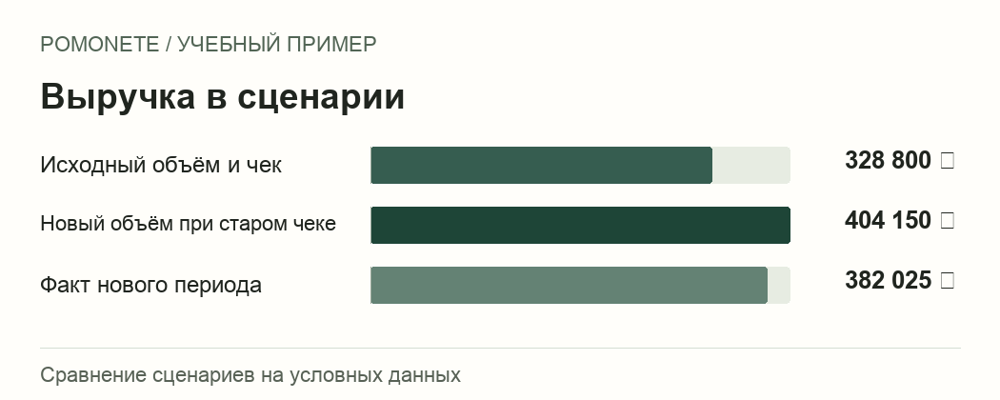

Цена или объём. Что объясняет изменение выручки на Яндекс Маркете
Считаем деньги на Яндекс Маркете и отделяем вклад изменения цены от числа доставленных единиц.
В магазине наборов для ухода за обувью продажи растут, а средняя выручка с доставленной штуки падает. На встрече по Яндекс Маркету важно понять величину обоих изменений. Покажем промежуточную строку, которая держит цену первой недели и позволяет посчитать вклад роста объёма.
Как разложить изменение
Сначала вычтите первую строку из второй. Затем сравните третью со второй. Полученные два изменения в сумме должны совпасть с итоговой разницей. Первый переход использует прежнюю цену, второй использует новый объём. Запишите порядок переходов, чтобы коллеги смогли повторить таблицу.
Чтобы пересобрать расчёт «Выручка в сценарии» для своего магазина, перенесите в него исходные числа. В формуле A обозначает «средняя выручка с единицы, ₽», B обозначает «доставлено единиц», C обозначает «отдельные денежные строки, ₽». Переменную часть оценивают через объём, а разовую добавляют отдельно. Проверьте, что разовая величина ещё не включена в ставку. Запишите рядом период и охват каждого среза. Для оценочных строк оставьте пояснения рядом с исходными значениями. При чтении сводки будет видно, какие из них пока подтверждены.
Выручка в сценарии = A × B + C
| Условие | Средняя выручка с единицы, ₽ | Доставлено единиц | Отдельные денежные строки, ₽ | Выручка в сценарии |
|---|---|---|---|---|
| Исходный объём и чек | 1 370 | 240 | 0 | 328 800 ₽ |
| Новый объём при старом чеке | 1 370 | 295 | 0 | 404 150 ₽ |
| Факт нового периода | 1 295 | 295 | 0 | 382 025 ₽ |

В сценарии «Исходный объём и чек» в формулу подставляем средняя выручка с единицы, ₽ = 1 370, доставлено единиц = 240, отдельные денежные строки, ₽ = 0. Получается 328 800 ₽. Первый период с известным составом. Разовые строки исключены во всех вариантах упражнения.
В сценарии «Новый объём при старом чеке» в формулу подставляем средняя выручка с единицы, ₽ = 1 370, доставлено единиц = 295, отдельные денежные строки, ₽ = 0. Получается 404 150 ₽. Меняем только количество доставленных единиц. Этот промежуточный итог описывает объёмную часть.
В сценарии «Факт нового периода» в формулу подставляем средняя выручка с единицы, ₽ = 1 295, доставлено единиц = 295, отдельные денежные строки, ₽ = 0. Получается 382 025 ₽. Теперь подставляем среднюю выручку с единицы второго периода, сохраняя новый объём.
Если «Исходный объём и чек» взять за исходную точку, «Новый объём при старом чеке» меняет показатель «выручка в сценарии» на 75 350 ₽, а «Факт нового периода» на 53 225 ₽. Между двумя последними строками разница составляет -22 125 ₽ при вычитании второй из третьей. Смотрите, какой именно вход изменился между строками. Если менялись объём и условия одновременно, итог сравнения относится ко всему сочетанию.
От меньшего результата до большего в таблице 75 350 ₽. При переходе из «Новый объём при старом чеке» со значением 404 150 ₽ в «Факт нового периода» со значением 382 025 ₽ условия заданы явно. Этот интервал описывает три построенных случая, а для вероятности исходов нужна история. В рабочей записке полезно назвать минимальное значение, при котором сохранится ваше решение. Если такой порог попадает внутрь интервала, подтвердите спорный параметр до того, как менять процесс.
Что ещё меняет среднюю выручку
Варианты товара могут стоить по-разному. Если более дешёвые наборы продавались чаще, среднее уменьшится при неизменных ценах каждой позиции. Чтобы отделить это влияние, сперва соберите вклад цены и объёма для конкретного SKU, затем сложите результаты. Новинки выделяйте в самостоятельную строку.
Для исходной выборки пригодятся отчёт аналитики и история доступности предложения. Зафиксируйте строки и границы периода, по которым собирался показатель «выручка в сценарии». Копию выгрузки держите рядом с рабочим расчётом. По ней коллега сможет проверить, что строку отнесли к нужному сценарию, а единица измерения сохранилась при переносе.
Рядом с таблицей показов положите календарь доступности, позиций и цен. Выгрузка агрегатов удобна для первого сигнала, но день с выключенным предложением ломает сравнение. Для каждой крупной группы полезно иметь отдельные суммы числителя и знаменателя. Если у дорогой категории мало показов, сводная конверсия почти полностью повторит поведение ходовых позиций. Для разбора причины начните именно с групп, у которых заметно изменился вклад в суммарную аудиторию.
Что сильнее всего меняет результат
Здесь проверим устойчивость числа 404 150 ₽, полученного для «Новый объём при старом чеке». Для примера проверим «средняя выручка с единицы, ₽», «доставлено единиц», «отдельные денежные строки, ₽». Меняем по одному параметру с шагом около 10% от его значения. Для небольших исходных чисел разница округляется до доступной целой единицы. Сдвиги ниже относятся к исходному сценарию, поэтому читатель может сопоставить их в одних единицах.
- «Средняя выручка с единицы, ₽» меняется с 1 370 на 1 507. При прежних остальных входах получается 444 565 ₽, сдвиг составляет 40 415 ₽.
- «Доставлено единиц» меняется с 295 на 325. При прежних остальных входах получается 445 250 ₽, сдвиг составляет 41 100 ₽.
- «Отдельные денежные строки, ₽» меняется с 0 на 1. При прежних остальных входах получается 404 151 ₽, сдвиг составляет 1 ₽.
Наибольшее отклонение в примере связано с параметром «доставлено единиц» и составляет 41 100 ₽. Сохраните в расчёте, почему выбран именно этот сдвиг. После следующей выгрузки вместо учебных шагов попробуйте подставить разницу между наблюдавшимися периодами. Так проверите, насколько устойчива цифра при фактических колебаниях вашего магазина.
Разложение можно сделать в обратном порядке, сначала подставив новую цену для старого объёма. Итог совпадёт, а индивидуальные вклады будут отличаться на совместный эффект. Если результат попадает в презентацию, сохраните выбранное определение рядом с таблицей.
Почему важна контрольная сумма
Сверьте итог при переходе с уровня магазина на уровень артикулов. Часть выручки может остаться в строках с неопознанными товарами или округлённой средней стоимостью. Решение о ценах принимайте по группе с понятными скидками, а для планирования общих денег оценивайте фактический вклад после затрат.
Снимайте второй срез на тех же условиях. Если изменились источники или доли предложений, добавьте таблицу с фиксированным составом товаров и отметьте, какую долю исходной выборки она охватывает. Один расчёт покажет, что произошло у магазина в целом. Расчёт с фиксированным составом покажет изменение у сравнимых позиций. Заказы закрываются со временем, поэтому суммы по завершённым продажам дополните датой проверки.
Оставьте в рабочей таблице причину выбора. Когда селлеры Яндекс Маркета возвращаются к расчёту «выручка в сценарии», им пригодятся полученное значение, ответственный и дата пересмотра. Если в решении использовался сценарий «Новый объём при старом чеке», перенесите вместе с ним допущения. При обновлении источников сначала проверьте одну исходную строку и только потом пересчитывайте сводку.